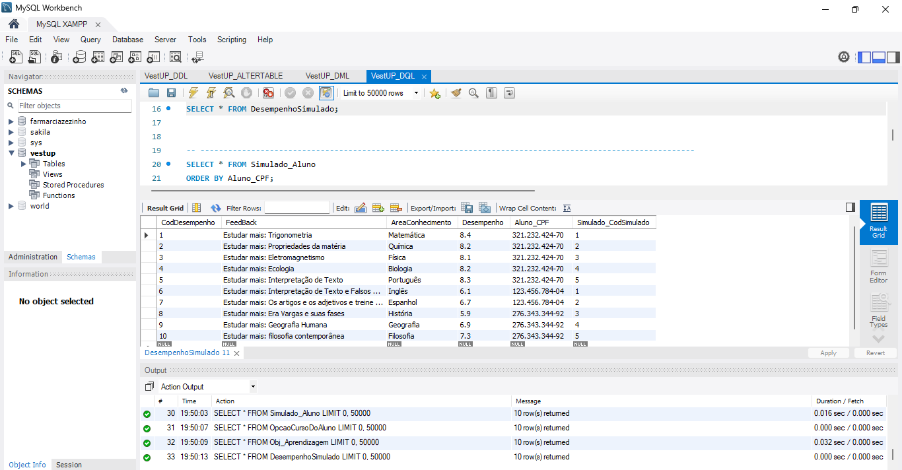

Olá! Primeiramente, digo que é um prazer ter você aqui. Meu nome é Caio José e estou no segundo período do curso de Análise
e Desenvolvimento de sistemas na Faculdade SENAC com o propósito de me tornar um Engenheiro de Dados. Fique a vontade para
conhecer sobre mim e projetos que realizei durante o perído de ensino.
Como dito antes, tenho a intenção de me tornar um Engenheiro de Dados
para trablhar, de primeira mão, com Banco de Dados Relacional. Isso só retrata
a paixão que adquiri pelo ensino da disciplina durante as aulas da Faculdade.
Também procuro aperfeiçoar a soft-skill de comunicação que é onde sou mais
precário, porém o que tenho mais tentação, pois com a comunicação é possível transformar
o ambiente de trabalho e, também abrir portas para novas oportunidades.
Formação
Em 2023 conclui o curso de inglês avançado no SENAC Paulista.
Também em 2023 comecei o curso de Análise e Desenvolvimento de Sistemas na Faculdade SENAC.
Habilidades
Habilidades que possuo e que
também venho construindo:
HTML
CSS
JavaScript
MySQL
inglês avançado
Excel
Projetos
Durante o período de quase dois semestres, construi Bancos de dados para dois projetos:
VestUP
Escola de múscica.
O VestUP se trata de um aplicativo Pré Vestibular cujo a principal função é a democratização da educação para o indivíduo de baixa renda

O banco de dados da escola de música permite que o sistema gerencie informações cruciais sobre suas orquestras,
sinfonias, músicos e instrumentos. Ele é projetado para fornecer dados relevantes para a organização e execução das
apresentações musicais, bem como para o acompanhamento das mudanças de função dos músicos ao longo do tempo.